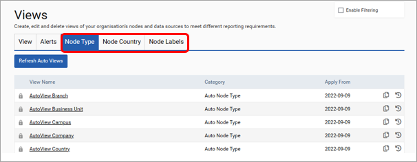

Automatic views are created and maintained in SPM dependent on the node country, node type or node label. Automated views are updated automatically overnight. To distinguish between the user created views, these views have their own tabs within the views screen. Please note that these views have a flat structure, are not editable and cannot be deleted. They are also assigned to the View categories of ‘Auto Node Country’, ‘Auto Node Type’ and ‘Auto Node Label’ accordingly.
